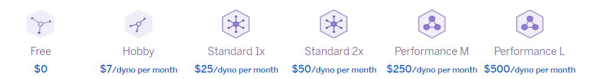

Heroku
Presented by Elyor Farmonov
Supervised by Said Akhmed Agitaev
History of Heroku
Orion Henry, James Lindenbaum and Adam Wiggins
for supporting projects that are based on Ruby - 2007

The company was acquired by Salesforce in 2011
(212 mln.USD).
What is HEROKU?
"Heroku is a cloud platform that lets companies build, deliver, monitor and scale apps — we're the fastest way to go from idea to URL, bypassing all those infrastructure headaches." - Authors
about Iaas, PaaS
Service providers
Pizza as a Service

IT architecture without Heroku
Advantages
- Free to start
- Multiple languages (NodeJS, PHP, Ruby, etc.)
- Easy to use (Never think about servers)
- Easy to scale relies on Dynos
- Stable (backed by AWS and operations' experts)
Dynos
The Heroku Platform uses the container model to run and scale all Heroku apps.
A dyno is a linux container used at Heroku.
"Dyno" is the term Heroku uses for its web servers.
Slide 3
Deployment
- Create an account at Heroku
- Install the Heroku CLI https://devcenter.heroku.com/articles/heroku-cli
- Navigate to your folder
- Login to the Heroku CLI
$ heroku login - Create an app on Heroku
$ heroku create - Deploy the code to Heroku
$ git push heroku main
Thanks for your attention!
Questions?